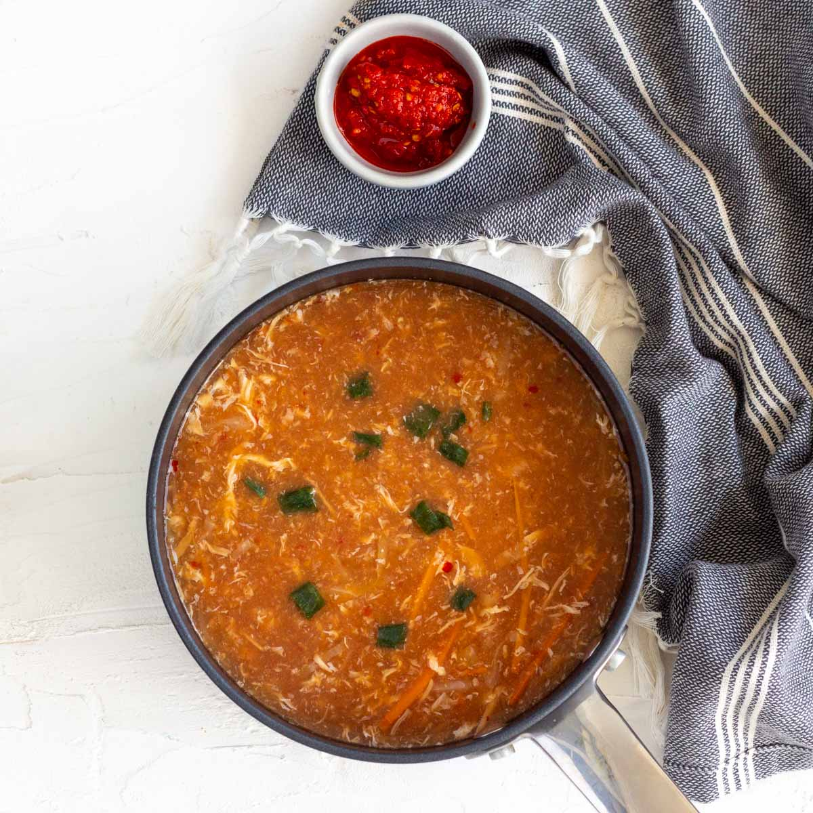

Chicken Hot and Sour Soap
Bottom of the page
Chicken hot and sour soup is a Chinese restaurant classic – it’s spicy and tangy, and filled with all sorts
of
delicious ingredients.
This particular recipe is for an Indo Chinese or Pakistani restaurant style hot and sour soup with chicken,
vegetables and silky egg ribbons all combined together in a spicy tangy broth.

The ingredients required for chicken hot and sour soup are quite simple, and should be easily available in your
house, or just require a quick run to the nearest grocery store.

- Stock:
Chicken or vegetable stock (or broth) both will work in this recipe. Make your own, or purchase it from
the supermarket. Just remember that store-bought brands can be high in sodium content so adjust the salt in the
soup accordingly.
- Chili:
This is where the hot part in the soup comes from. The heat comes from red chili powder, and red
chili paste. I use the one from Aldi, but you can use whatever is available in your country. Some options
include chili paste, sambal olek, sriracha sauce, chili sauce or chili garlic sauce. Just remember that the
paste will usually be hotter than a sauce, so adjust quantity accordingly.
- Soy sauce,
vinegar and sugar: Soy sauce for that Chinese flavor, vinegar for sourness, and sugar to balance
everything out.
- Tomato ketchup:
Not a traditional Chinese ingredient, but an essential component of Indo Chinese
recipes as well as Pakistani Chinese recipes. This balances out the sourness in the soup, and also gives the
soup it’s signature reddish hue.
- Chicken:
Boil chicken in salt and pepper. Shred it up and use it as a base for this soup.
- Vegetables:
Cabbage and carrot, shredded and julienned respectively are a must in this soup. It’s also possible to add
sliced capsicum.
- Cornflour /
cornstarch: This is used to thicken the soup.
- Eggs:
Which we will whisk, and the drizzle into the soup to make those lovely egg ribbons.
- Salt and white pepper:
Chinese recipes, including hot and sour soup usually use white pepper. It’s got a
slow heat to it versus the direct spice hit that comes from black pepper. In case white pepper isn’t
available, black pepper can be used.
How is the different Indo Chinese or Pakistani hot and sour soup
Different from the regular Chinese version?
If you order hot and sour soup from a Chinese restaurant in any other part of the world, the broth will be
sour, and a little but mainly it will be earthy and smoky, with the broth being a rich dark color. Along
with the main protein, the hot and sour soup will also mushrooms (porcini or shitake) along with tofu and
bean sprouts.
On the other hand, the Pakistani hot and sour soup will be red in color. Yes, red! The red color is quite
common in Indo Chinese or Pakistani Chinese recipe and comes from the use of tomato ketchup and red chili
powder. Indo Chinese cuisine is considered a style of cuisine that combines aspects of Chinese food and
Indian flavors creating a hybrid version of spicy Asian dishes. This soup is a part of that cuisine, and
hence is usually quite sour and spicy. Though there are few places that add tofu in soup, most of the times
the main ingredients in the Pakistani hot and sour soup will be chicken and vegetables, usually carrot,
cabbage and capsicum. Lastly, the soup is served with the classic Chinese restaurant trio of condiments –
soy sauce, green chilies in vinegar and red chili paste.

Is hot and sour soup healthy?
It is, and with the addition of chicken and vegetables it can make for a complete
meal. One serving of hot
and sour soup (which is a full bowl and a half of this recipe) has around 200 calories in it. Not only is it
a great option for people looking to eat healthy or trying to reduce their calorie intake, but it is also
super delicious! In case you want to change things up, you can add low carb options such as zucchini
noodles, or additional meat and vegetables, focusing on low calorie options.
How to make Indo Chinese style hot and sour soup?
Making hot and sour soup is super simple! Just place everything in one pot, and let it simmer till done.
- Prepare the broth:
Place the chicken stock with spices, ketchup, chili paste and the other sauces in a saucepan and let it
come to a boil.
- Add the chicken and vegetables:
Turn heat to low, and then add the chicken, cabbage, and carrots. Cook for about 5 – 8 minutes till the
chicken and vegetables are warmed through.
- Thicken the soup:
The soup is thickened in two stages, first by adding the cornflour / cornstarch slurry, and then by adding the
whisked egg. As the whisked egg is added into the soup, egg ribbons are created which add texture as well as
thickening the soup.
- Serve:
Serve delicious hot and sour soup with your choice of condiments!
Would love it if you could try out and rate the recipe, and let me know how it was in the Email or Whatsapp
below!
Top of the page